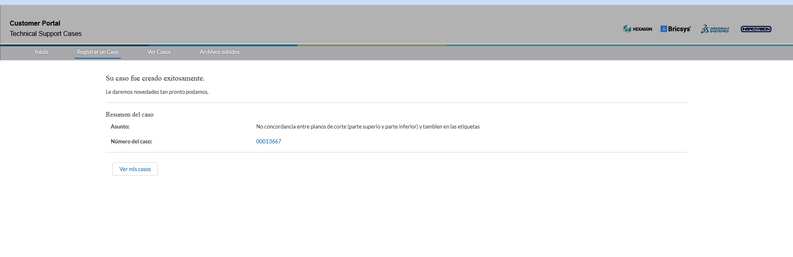
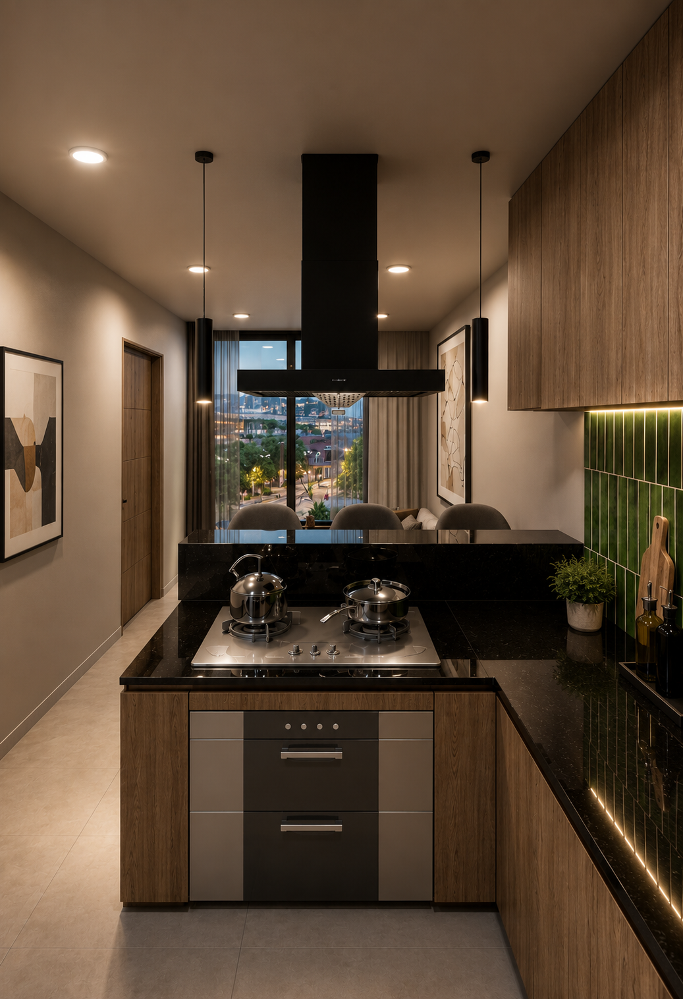
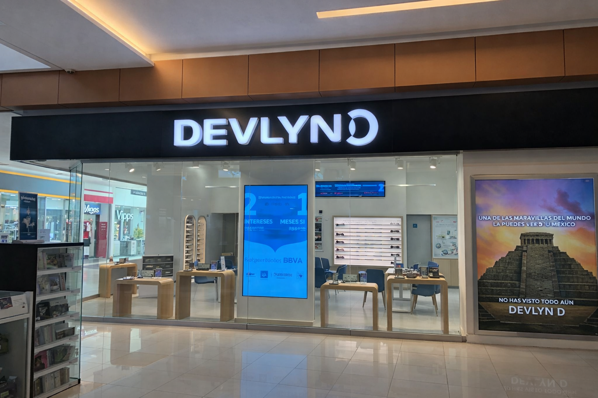

● ANSI/AWI 0641 COMPLIANT • READY FOR USA REMOTE DETAILED ENGINEERING
Concept-to-Production Engineering for Architectural Millwork & Casework
I transform high-end architectural concepts into shop-tested, CNC-nested, error-free fabrication packages. Specialized in Cabinet Vision Solid, Rhinoceros 8, Screen-to-Machine (S2M) automation, and field tolerance management for custom furniture manufacturers and retail rollout contractors.
Concept-to-production 3D CAD detailing, multi-material engineering (engineered wood, brushed brass, low-iron UV glass), concealed 24V SELV LED routing, and 282.75 m² of high-gloss polyurethane finish envelope.
Rhino 8AutoCADAWI 0641NOM-001 SELVDual Imperial

CAD/CAM & CNC14/14 BLOCKS
Automated Casework CAD/CAM & Direct CNC Plant Release
WF-ING-MAQ-01 SOP — Biesse Rover & Nanxing P2P
Direct Screen-to-Machine (S2M) nesting pipeline. Nanxing edgebander pre-mill balancing (+3 mm offset in geometry for ±0.2 mm finished tolerance), barcode part tracking, and the shop-floor "Triple P Protocol".
National Multi-Store Retail Chain Fixture Detailing & Rollout
Devlyn 2026 Expansion — 13 Nationwide Locations
Multi-store plan auditing under strict Evidence-First rules. Engineered wall niche building tolerances (+40 mm W / +20 mm H), LED illuminated shelves with thermal expansion clearance (-3 mm), and standardized 800 mm electrical datums.
Plan AuditingStore RolloutTolerance RulesXikú DisplayAutoCAD

CUSTOM CASEWORK14/14 BLOCKS
High-End Residential Casework, Tolerance Detailing & Quality Control
Full-scope kitchen and bath casework engineering. Blum Legrabox and AVENTOS integration, convection chimney venting behind built-in refrigerators, and resolution of the shop-floor +5 mm door tolerance drift via Gage Testigo calibration.
Automated panel yield optimization (89.4% yield with OpenNest), custom JavaScript UCS standards for automated blind corner dado joinery in Cabinet Vision, and Image Quilting patch synthesis for seamless 1220×2440 mm board textures.
Grasshopper GHCabinet Vision UCSPython 3.13Image QuiltingMCP Research
WEBGL 3D DIGITAL TWIN
Interactive 3D Casework Inspection
Inspect full-scale cabinet assemblies directly in your browser. Rotate, zoom, and inspect joinery clearances without downloading CAD files. Optimized for mobile and AR inspection via Google <model-viewer>.
Drag the slider to compare the 4K photorealistic architectural render against the actual manufactured and installed commercial store furniture.

⟷
CONCEPT RENDER (4K)
FABRICATED & INSTALLED STORE
CORE CAPABILITIES
Production Software & CNC Machinery Expertise
I speak the language of the shop floor. My drawings and CAM releases are calibrated for actual machine tool feeds, pre-milling offsets, and tooling RPMs.
📐
Cabinet Vision 2024 & S2M
Advanced catalog customization, UCS (User Created Standards) JavaScript rules, dynamic parametric variables, and Screen-to-Machine nesting optimization.
⚙️
Biesse Rover / Clever CNC
Generation of native CID and NC machine code for 3-axis flat-table nesting routers, vacuum bridge balancing, and lead-in/lead-out feed rate optimization.
🎯
Nanxing NCB2412S P2P
Horizontal and vertical boring programs (MPR format) for modular dowel, Minifix cam-and-pin, and 32mm system shelf pin hole arrays.
🪚
Felder Kappa Beam Saw
Optimized primary rip and crosscut saw cut lists, scoring blade alignment parameters, and grain direction enforcement across sheet panels.
Automated Bill of Materials (BOM) multi-level importing from Cabinet Vision RTF outputs, routing operations, and manufacturing order scheduling.
ZERO FRICTION • READY FOR SUBCONTRACTING
Let's Discuss Your Detailing & CAD/CAM Capacity
Whether you need an overflow engineer for AWI shop drawing submittals, Cabinet Vision S2M nesting packages, or parametric 3D modeling, I am ready to deliver.
The client required shop drawings and parametric BOM for 31 custom millwork items in a flagship mall boutique. Zero floor penetrations were permitted; island fixtures incorporated structural steel ballast plates to counteract cantilevered tempered glass vitrine loads without anchoring into mall slabs.
05 & 06 • 3D CAD Architecture & Substrates
Organized in Rhino 8 across 5 isolated sub-assembly layers:
1. Modular Split: Cash wraps exceeding 96" were split into interlocking modules with concealed alignment dowels and draw-bolts, fitting inside freight elevators without visible exterior seams.
2. Thermal LED Expansion: Routed channels included a +2mm linear clearance at profile ends to allow aluminum extrusion thermal growth during 14+ hours of continuous daily retail illumination.
Automated Casework CAD/CAM & Direct CNC Plant Release
01 & 02 • At-a-Glance Metadata Bar
Primary CAD/CAM
Cabinet Vision Solid 2024
CNC Router
Biesse Rover / Clever (CID)
P2P Boring
Nanxing NCB2412S (MPR)
Edgebander Comp.
+3.0 mm Premill Balancing
Quality Protocol
Triple P (Piece, Program, Label)
Panels Processed
1,200+ (0 CAM Errors)
The Engineering Core: Nanxing Pre-Mill Balancing
In standard automated edgebanders, pre-milling diamond cutters remove material before tape application. If the CAD geometry doesn't anticipate this, part dimensions drift by 1 to 2 mm. By locking Premill Edge Banding = 3.0 mm in Cabinet Vision preferences, the router cuts panels 3 mm undersized; the Nanxing cutter strips 3 mm, and the 2 mm PVC tape brings the part to the exact theoretical dimension within ±0.2 mm.
Shop Floor Evidence: The Triple P Protocol
Before launching batch production on the Biesse CNC, operators snap a photographic record confirming: (1) Physical adhesive label with barcode, (2) Machine console header showing active G-Code, and (3) First machined test piece (Gage Testigo) verified with digital calipers.
National Multi-Store Retail Chain Fixture Detailing & Rollout
01 & 02 • Project Scope & Multi-Site Coordination
Store Network
13 Locations (Mitikah, Tepeyac, etc.)
Extraction Protocol
Evidence-First / Fail-Closed
Niche Clearance
+40 mm W / +20 mm H
Glass Shelf Deduction
-3.0 mm LED Wire Clearance
Electrical Datum
800 mm to Center Line (CL)
Shop Efficiency
85% Components Cut in Continuous Runs
Evidence-First Plan Auditing
Architectural plans from retail malls frequently contain conflicting drywall dimensions. Under our Fail-Closed rule, ambiguous callouts triggered formal RFIs rather than shop guesses, completely eliminating on-site saw cuts and preventing thousands of dollars in re-cuts.
Case Study: The "Door Retraction" Quality Forensic
A quality audit identified a cumulative +5 mm door tolerance drift caused by edgebander pre-milling vibration and humidity uptake. Production was frozen until machine offsets were recalibrated with a physical dummy piece (Gage Testigo), establishing an immutable plant rule that prevented scrap before installation.
Commercial Hospitality Casework & Corporate Workstation Systems
01 & 02 • Multi-Material Integration
Corporate Scope
80 Workstations / 8 Executive Suites
Counter Structure
1 1/2" Structural Steel Tubing
Solid Surface
12 mm Thermoformed Acrylic
ERP Integration
Odoo MRP Multi-Level BOM
Site Assembly
Dry-Fit Modular (50% Faster Install)
Cable Management
Under-Counter Continuous Raceways
Structural Steel & Solid Surface Integration
Heavy solid surface countertops transfer dynamic point loads onto service cabinetry. By designing an internal welded tubular steel frame (PTR 14-gauge), acrylic counter joints were isolated from deflection, while wooden cabinet carcases remained fully removable for under-counter plumbing maintenance.
Algorithmic Nesting, Custom UCS Scripting & AI Production Engineering
01 & 02 • Algorithmic Architecture
Nesting Engine
Grasshopper OpenNest 2.94
CV Scripting
Custom JavaScript UCS Standards
Texture AI
Image Quilting 1220×2440mm
Sheet Yield
89.4% (vs 78% Traditional)
Drafting Speed
Corner Dado generated in <3s
Tiling Continuity
Toroidal 2×2 Mosaic Zero-Seam
UCS JavaScript Automation for Blind Dadoes
Rather than manually modeling corner cleats in Cabinet Vision, the CERCHA_ESQUINA_UCS_JS.js script detects intersecting wall cabinet boundaries and triggers automatic dado routing and fastener arrays in less than 3 seconds per cabinet assembly.